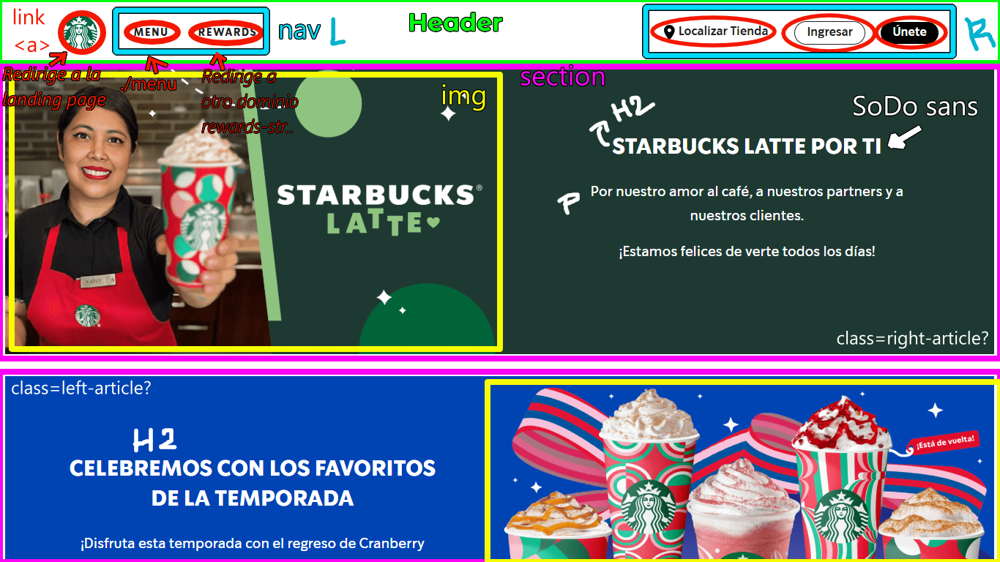

Desarrollo del primer commit - 27-11-2024
Antes de comenzar a desarrollar el clon, es vital analizar la pagina (siguiendo mi workflow), aquí adjunto la labor que lleve a cabo de analizar la estructura básica que tiene el sitio
Antes de comenzar a desarrollar el clon, es vital analizar la pagina (siguiendo mi workflow), aquí adjunto la labor que lleve a cabo de analizar la estructura básica que tiene el sitio